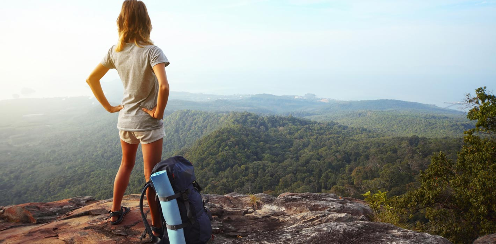

Solo Female Travel Safety Tips

Our solo female travel trends survey revealed that 73% of solo female travelers worry about
their safety. Even those who are very experienced solo travelers and have taken more than 10
trips on their own, still worry almost as much.
Traveling solo poses a lot of uncertainties and challenges and, for women, those unknowns
are made worse by the fear of something bad happening to them. This is why we have put
together this article with the most comprehensive list of solo female travel safety tips
there is.
No matter where you go, whether it is a very solo female travel friendly destination, or an
unusual one, the safety solo female travel tips below will help you prepare and stay
safe.
Plan your trip with safety in mind
The planning phase can help you stay safe in the general sense of the word.
Keeping your documentation safe is important and having a plan B in case your passport
gets
stolen is key. Always make copies of anything important such as your passport, drivers
license, all your bookings and your travel insurance card and keep that away from the
originals. This will be helpful in case you need to report them stolen.
Email yourself a copy of all important documents so if you lose both your copy and the
documents, you can access a copy from the internet. Include copies of your credit cards
because even if they’re lost or stolen, you can still use them online to make purchases of
emergency items like food delivery or even Amazon Prime if you are in your own country, or a
flight back home, before cancelling the card. We recommend you cancel the card immediately
after you have realized it has been lost or stolen.
Leave a detailed itinerary with all your bookings and the places you are expected to be
at
with someone you trust and can check in with you daily, like your parents, your partner or a
best friend. Even if you’re very independent, this means your closest contacts will know how
to reach you in case of an emergency at home, and check in with you if something happens in
the destination they know you’re traveling in, or alert local authorities if need be. This
is not just for your own safety but also in case something happens to a loved one and your
family needs to reach out to you. There are travel apps that make it easy to put all your
itinerary in one place and share it with your loved ones.
Leave all your passwords with a trusted friend so, in case you disappear, that person
can
track your last movements and online interactions. This can also be helpful if you need to
resolve issues and have no access to the internet but can make a phone call, like that time
Mar needed to check in online while at the back of a motorcycle taxi in Uganda. Consider
including the passwords to your bank accounts too. We do recommend traveling with a VPN, and
routing your internet through your home country, as many organizations like email providers
and banks may block your account if they believe the location you’re logging in from is
suspicious. This has happened to us before.